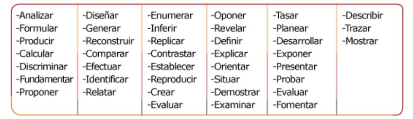
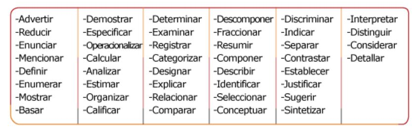
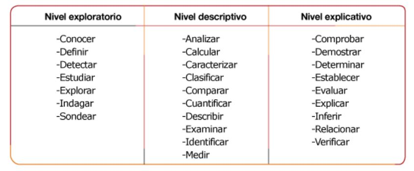
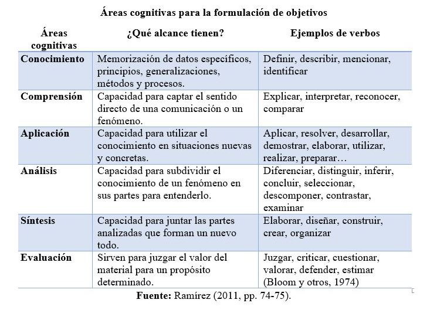

El objetivo general describe el propósito de la investigación en su dimensión global. Lo que se pretende alcanzar en el proyecto, estudio o trabajo de investigación. Además, es necesario dar a conocer objetivos específicos, aquellos que se orientan para alcanzar al objetivo general propuesto. Estos se van realizando en las etapas de la investigación. Comúnmente, se trabaja con un objetivo general y tres o cuatro objetivos específicos, aunque todo depende del alcance o profundidad de cada estudio en particular.
- El objetivo no debe ser una solución concluyente, sino buscar las razones detrás del problema y proponer enfoques más efectivos para abordarlo y comprenderlo -
- El objetivo general define donde queremos llegar ¿El para qué? y los objetivos específicos definen las estrategias para alcanzar el objetivo general ¿El cómo? -
.
Estructura de redacción de objetivos
Para redactar un objetivo general o específico se requiere iniciar con un verbo en infinitivo. Un aspecto importante para plantearlos es utilizar verbos que expliquen de manera concreta la acción que ejercerá el logro a cumplirse durante el desarrollo de la investigación. Por lo que los objetivos deben ser factibles a lograrse en un tiempo razonable.
Verbo en infinitivo + Variable + Contexto + Medio + Finalidad
Verbo en infinitivo + Qué - Específico + Dónde + Cómo - Con qué + Para qué
.
Ejemplo de redacción de objetivo considerando los elementos de la estructura
Diseñar estrategias de clima laboral para empleados de la empresa privada implementando políticas para un buen ambiente laboral que propicie la motivación necesaria para mantenerlos productivos y activos durante todo el día.
Verbo en infinitivo
Qué - Específico
Dónde
Cómo - Con qué
Para qué
Diseñar
estrategias de clima laboral para empleados
de la empresa privada
implementando políticas para un buen ambiente laboral
que propicie la motivación necesaria para mantenerlos productivos y activos durante todo el día.
.
.
Los objetivos específicos deben ordenarse de tal manera que indiquen el progreso que se da para alcanzar el objetivo general. No es recomendable repetir verbos entre objetivos. Para describir dos acciones deben buscar sinónimos.
Ejemplo de verbos para redacción de objetivos
Verbos para objetivos generales:

Verbos para objetivos específicos:

Verbos según el tipo o nivel de investigación


Verbos que no se recomiendan ser utilizados en la redacción de objetivos porque generan duda e incertidumbre: apoyar, aprender, asumir, atender, concientizar, dar a conocer, decidir, entender, fomentar, impactar, intentar, llevar a cabo, lograr, prevenir, promover, realizar, repetir, etc.
.
.
REFERENCIA
Ramírez, J. (2011). Cómo diseñar una investigación académica. Heredia, Costa Rica: Montes de María Editores.